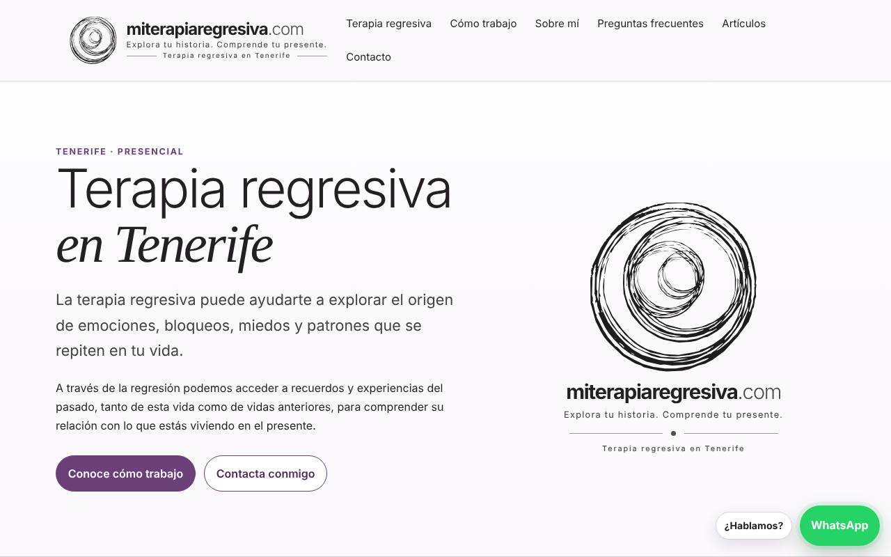
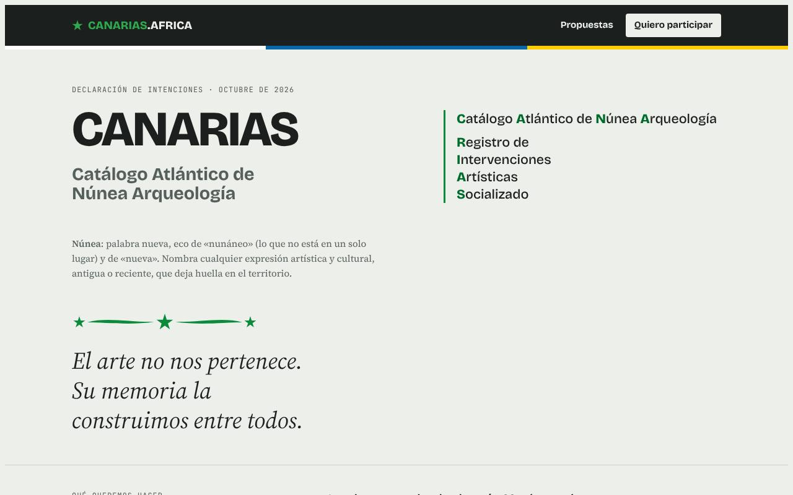
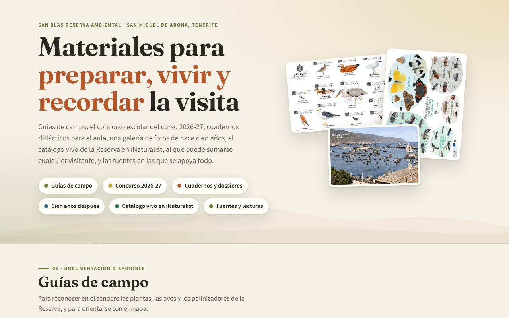
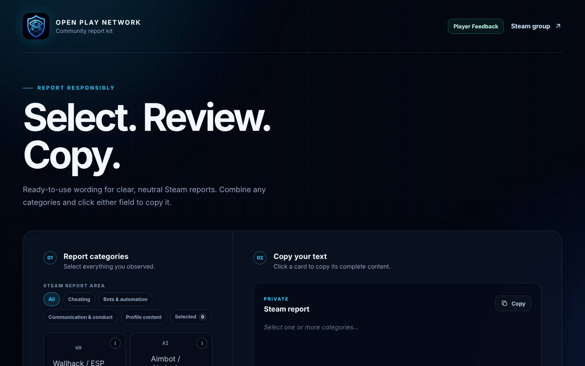

Client · Optimisation web
Clínica Dental Dharma
Problème Un site WordPress lourd et coûteux à héberger.
Idée Le migrer vers un site léger et optimiser ses ressources.
Concept Site statique plus rapide et moins cher à héberger. Proposition remise au client, pas encore publiée.
Voir le projet (s’ouvre dans un nouvel onglet) ↗

Client · Bien-être
Mi Terapia Regresiva
Problème Une thérapie peu connue, difficile à expliquer et dont le premier pas coûte.
Idée La raconter avec des articles et des réponses aux questions fréquentes.
Concept Site avec articles, questions fréquentes et contact direct par WhatsApp.
Voir le projet (s’ouvre dans un nouvel onglet) ↗

Culture · Patrimoine
Canarias.africa
Problème L’art et la culture des Canaries, dispersés et sans lieu commun.
Idée Un musée sans bâtiment, construit par tous.
Concept Le Catalogue atlantique de Núnea Arqueología, ouvert et collaboratif.
Voir le projet (s’ouvre dans un nouvel onglet) ↗
Éditorial · Territoire
Macaronesico
Problème Comprendre le territoire au-delà des gros titres.
Idée Un laboratoire ouvert qui croise données et voix de ceux qui l’habitent.
Concept Analyses, opinions et données sur les Canaries et la Macaronésie.
Voir le projet (s’ouvre dans un nouvel onglet) ↗
Communauté · Carte collaborative
Archipiélago Vivo
Problème Des personnes et des initiatives qui prennent soin des Canaries sans se trouver.
Idée Un réseau collaboratif qui les met sur la carte.
Concept Carte, agenda et réseau qui relie personnes, collectifs et initiatives.
Voir le projet (s’ouvre dans un nouvel onglet) ↗
San Blas Reserva Ambiental · Éducation
Dossier des visites scolaires
Problème Les enseignants doivent décider et préparer une sortie scolaire avec toutes les informations sous la main.
Idée Un dossier web clair, pensé pour qui organise la sortie.
Concept Visite de la Réserve, du Musée et du Tunnel de l’expérience historique, avec cahiers par niveau et demande de date.
Voir le projet (s’ouvre dans un nouvel onglet) ↗

San Blas Reserva Ambiental · Guides
Guides et supports
Problème Les visiteurs doivent reconnaître plantes, oiseaux et pollinisateurs sur le sentier.
Idée Des supports imprimables pour préparer, vivre et se souvenir de la visite.
Concept Guides de terrain, carte, cahiers pédagogiques, concours scolaire et la galerie « Cien años después » (Cent ans après).
Voir le projet (s’ouvre dans un nouvel onglet) ↗
San Blas Reserva Ambiental · Email marketing
Campagnes e-mail
Problème Toucher hôtels, écoles et agences avec un message adapté à chacun.
Idée Des campagnes e-mail propres à chaque public et saison.
Concept Modèles d’e-mail avec photos, vidéo et icônes de la Réserve, classés par public, année et campagne.
Travail pour un client
Plateforme · Open source
Sindical Federado
Problème Des comités et sections syndicales sans site propre, simple et bon marché.
Idée Un système statique que chaque section configure et fédère avec les autres.
Concept Plateforme open source avec convention collective, prévention et participation.
Voir le projet (s’ouvre dans un nouvel onglet) ↗
Plateforme · Open source
TV-App
Problème Diffuser sa propre chaîne sans infrastructure de télévision.
Idée Programmer à heures fixes des vidéos de plateformes existantes.
Concept Moteur de télévision web avec YouTube, Vimeo et PeerTube.
Voir le projet (s’ouvre dans un nouvel onglet) ↗

Outil · Communauté
Open Play Network
Problème Des signalements confus ou peu neutres dans la communauté Steam.
Idée Des modèles guidés pour bien les rédiger.
Concept Un kit pour choisir, relire et copier des signalements clairs et neutres.
Voir le projet (s’ouvre dans un nouvel onglet) ↗
Outils ouverts · Sécurité numérique
Diez Claves
Problème La sécurité numérique s’explique avec du jargon et de la peur, et presque jamais pour les hispanophones.
Idée L’expliquer en espagnol simple, toujours en dix clés, avec des outils qui n’envoient rien à personne.
Concept 95 guides en 9 thèmes et un générateur de mots de passe avec ñ et accents, qui fonctionne dans le navigateur, sans cookies et au code ouvert.
Voir le projet (s’ouvre dans un nouvel onglet) ↗